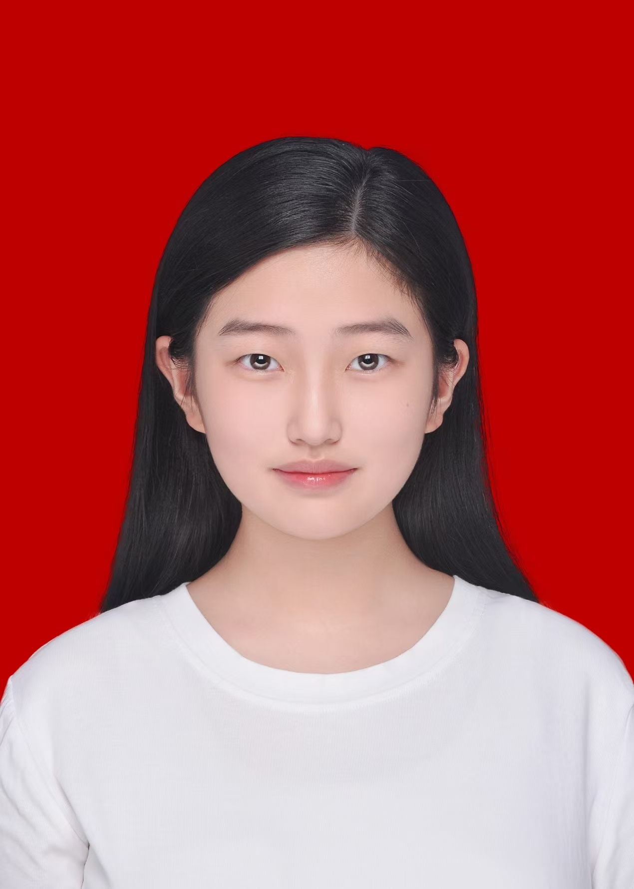

姓名：
宋依文
性别：
女
民族：
汉族
出生年月：
20060119
联系电话：
18014409198
政治面貌：
共青团员
电子邮箱：
1741355549@qq.com
毕业院校：
淮阴师范学院
所学专业：
广播电视学
毕业时间：
20280600

教育背景
2023.09 - 2027.06 | 淮阴师范学院 新闻学专业 | 本科
主修课程：新闻学概论、传播学概论、新闻采访与写作、网络与新媒体概论、广播电视编导、媒介经营与管理等，专业成绩位列年级前15%，连续2学年获校级二等奖学金
参与校级大学生创新创业训练计划项目《地方传统戏曲（淮海戏）的新媒体传播路径研究》，负责前期用户调研与文献整理工作，项目获评校级良好
实践经历
2024.07 - 2024.09 | 连云港市灌云县融媒体中心 新媒体运营实习生 - 负责官方公众号、视频号的内容策划与日常运营,与地方文化IP“灌云豆丹”“淮海戏传承”主题系列报道的前期采访、文稿撰写与短视频拍摄剪辑工作,独立完成推文12篇、短视频8条。
参与运营的视频号单条《豆丹美食节Vlog》最高播放量突破12万,动本地文化话题阅读量提升40%；协助完成的《非遗淮海戏进校园》系列报道，被市级媒体转载，获评县融媒体中心季度“优秀内容奖”。
填写职场实操经验、对接工作内容等熟练掌握Premiere剪辑、公众号排版、新闻稿撰写等实操技能,解地方媒体内容生产流程,升了选题策划与用户洞察能力，为新媒体相关工作积累了一线实践经验。
实践相关视频展示区：
您的浏览器不支持HTML5视频播放，可点击下载视频查看：
下载视频
校园经历
2025.06 | 校大学生记者团 新媒体部干事/副部长- 负责校园官方公众号、视频号的内容运营,与策划“校园文化节”“新生采访”等系列专题报道,计独立撰写推文30+篇，拍摄剪辑校园主题短视频20余条，单条最高阅读量突破5000次。 - 参与校园活动的全流程执行，包括前期采访、文案撰写、后期排版剪辑，熟练掌握公众号运营、视频剪辑、新闻稿写作等技能，提升了选题策划与用户洞察能力。
2025.04| 参与校“新媒体创意大赛”，以地方非遗淮海戏为主题制作短视频作品，获得校级三等奖；2025.09| 参与校“新生志愿服务”活动，负责引导新生报到、拍摄校园宣传素材，获评“优秀志愿者”。
参与校级大学生创新创业训练计划项目《地方传统戏曲的新媒体传播路径研究》，负责用户调研与文献整理，协助完成项目报告撰写，提升了团队协作与项目执行能力。
专业技能与自我评价
专业技能：
熟练掌握Office办公软件，能独立完成公众号排版、图文撰写与短视频剪辑；掌握Premiere、剪映等视频剪辑工具，具备基础的PS修图与新媒体运营能力；持有计算机二级证书，英语四级水平，具备良好的文字表达与新闻稿撰写能力。
个人优势：
具备良好的沟通协调能力与团队协作意识，做事认真细致，对热点话题敏感，擅长捕捉用户喜好；抗压能力强，能快速适应新媒体行业快节奏的工作模式，具备较强的学习能力与创新意识。
求职意向/自我总结：
希望从事新媒体运营、内容编辑、短视频制作等相关岗位，未来希望深耕地方文化传播领域，将所学的新闻传播知识与新媒体技术结合，为地方文化IP的推广贡献力量。